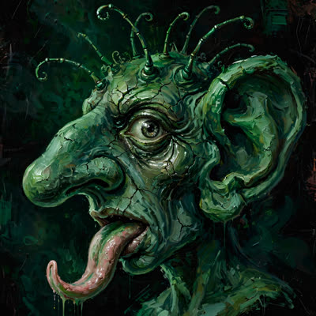

Aku membagikan ini untuk angka yang paling tidak enak dibaca: lebih dari 50.000 anak diduga keracunan sejak program ini berjalan — catatan JPPI. Lima puluh ribu perut kecil, lima puluh ribu ibu yang menerima telepon dari sekolah. Sekarang kita berdebat soal cara menyajikan. Anak-anak itu tidak bertanya apakah makanannya prasmanan atau dibungkus. Mereka bertanya apakah besok perutnya sakit lagi.
Uji coba baru: MBG disajikan prasmanan. Klaimnya: jeda masak-ke-makan lebih pendek, makanan lebih segar, sisa lebih sedikit. Sekarang periksa rantai sebabnya. Keracunan massal tidak lahir di meja saji — ia lahir di bahan baku, di dapur, di perjalanan, di tangan yang tidak bersertifikat. Prasmanan hanya mempercantik mata rantai terakhir. Mengganti ujung rantai tidak memperbaiki rantai. Itu bukan solusi; itu reposisi.
Uji coba MBG prasmanan – Diklaim lebih sedikit sisakan makanan, tapi bisakah menghentikan kasus keracunan?
BGN menguji coba penyajian prasmanan untuk MBG di 60 lebih dapur — diklaim lebih segar dan minim sisa. Namun pakar keamanan pangan dan pemantau pendidikan mempertanyakan apakah format baru ini menyentuh akar kasus keracunan massal yang korbannya telah melampaui 50.000 orang.
bbc.com
